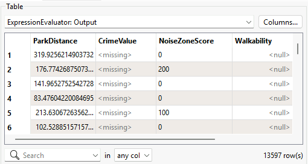
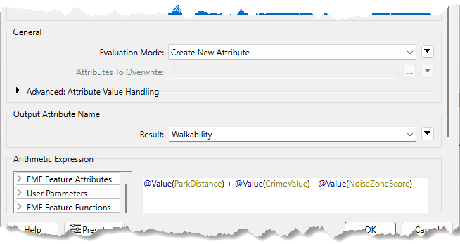
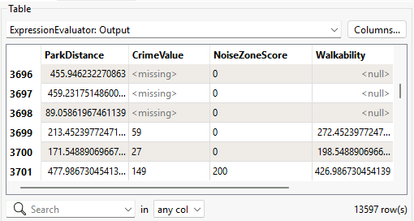
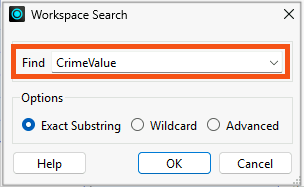
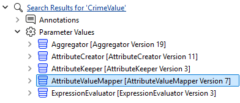
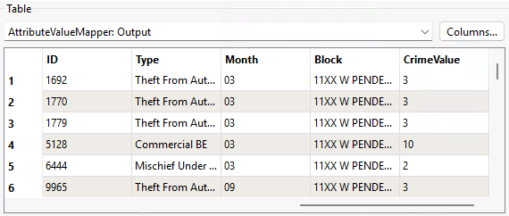
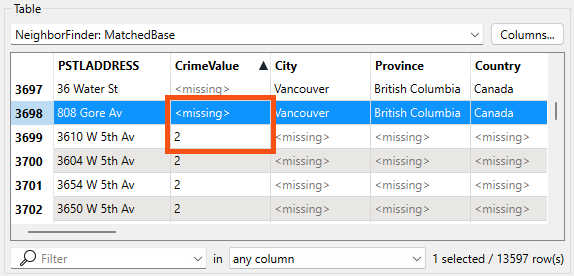
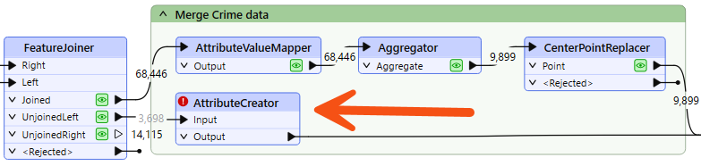
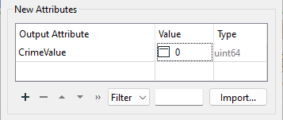

Learning Objectives
After completing this lesson, you’ll be able to:
- Review the log window for errors and warnings.
- Locate problems using feature counts and Data Preview.
- Identify and fix problems in a workspace.
Instructions
In this lesson, you will:
- Optional: Watch the Debugging a Workspace video.
- Scroll down to read the text below.
- Optional: Let us know if you found this lesson relevant to your role by filling out the survey at the bottom of the page.
- Click 'Next' to mark the lesson complete.
Note: This video was recorded using an earlier version of this exercise and appears in both this lesson and the next. The steps may not match exactly, but the concepts are the same.
Resources
Exercise
Jennifer hands off a walkability project to Frank. Her workspace reads address data from a File Geodatabase, joins it with crime and noise restriction data, and calculates a walkability score for each address in Vancouver. The workspace runs without errors, but some walkability scores are missing. Frank needs to find and fix the issue before the project can move forward.
In this exercise, you will:
- Trace a missing walkability score back to its source in the workspace.
- Add an AttributeCreator transformer to fix missing CrimeValue values.
1) Open Starting Workspace
- Start FME Workbench (2026.1 or later).
- Open your starting workspace (C:\FMEData\Workspaces\UseDataIntegrationBestPractices\trace-a-missing-value.fmw).
- Run your workspace.
2) Assess Walkability Output
After running your workspace, you check if the output looks correct. This is where you will first see that something has gone wrong, as this is where the final walkability score is created.
- On ExpressionEvaluator, click the Output port cache.
- Inspect the Walkability attribute.
- Note that some features have a walkability value of <null>.

- Notice that although the workspace ran, the output is only partly correct. Some walkability scores are calculated correctly, but others are null. We expect every address to have a walkability score, so something has gone wrong.
Now that you know some walkability values are null, you can check the Translation Log for clues about why. You know the log often points you toward where a problem is occurring, even if it does not explain the root cause.
- Open the Translation Log and select Warnings.
- There are no errors, but there are warnings.
- The number of warnings may differ depending on your FME Options.
- Review the warning messages:
- Null, missing, or empty string operand was found in expression '@Value(ParkDistance) + @Value(CrimeValue) - @Value(NoiseZoneScore)'. Result is set to null.
- This warning tells you that the workspace ran, but something in the walkability calculation is producing null results.
4) Inspect the ExpressionEvaluator
Now that you know some walkability scores are null, you want to figure out why. You start by checking how walkability is calculated.
- Double-click ExpressionEvaluator.
- Review the expression used to create the Walkability attribute:
@Value(ParkDistance) + @Value(CrimeValue) - @Value(NoiseZoneScore)- The calculation uses three attributes: ParkDistance, CrimeValue, and NoiseZoneScore.
- If any of these values are missing or null, the walkability score may not be calculated correctly.
- With this expression, a lower score means the address is more walkable. A higher score means the address is less walkable.

5) Find the Missing Input Value
You now know that walkability depends on three attributes. Check those attributes to find which one is causing the null result.
- On ExpressionEvaluator, click the Output port cache.
- In Table View, scroll through the features and compare the Walkability, ParkDistance, CrimeValue, and NoiseZoneScore attributes.

- Observe that features with a valid walkability score have a CrimeValue value, and features with a walkability value of <null> have a CrimeValue value of <missing>.
- This confirms CrimeValue is the problem. The ExpressionEvaluator cannot calculate walkability without it, so you need to find out where CrimeValue comes from and why some features are not receiving it.
6) Trace CrimeValue
Now that you know CrimeValue is missing for some features, trace backward to find where it is created and why some features never receive it.
- Press Ctrl/Cmd + F and enter: CrimeValue
- This searches the canvas for transformers, attributes, and parameter values matching your search term.

- On the Navigator, expand Search Results for 'CrimeValue' > Parameter Values.
- Click each transformer one at a time to see where they are in the workspace.
- Your goal is to find the first transformer to use CrimeValue. That way, you'll find where we created it, and can start to figure out why some features are missing it.
- Observe that the AttributeValueMapper in the Merge Crime Data bookmark is the transformer that creates CrimeValue.

- Inspect the AttributeValueMapper Output port cache.
- This transformer creates the CrimeValue attribute, but only for features that flow through it.

- Observe that the features in this cache have CrimeValue values.
- The AttributeValueMapper is working correctly for the features it receives.
- Continue along the same stream and inspect the Aggregator and CenterPointReplacer output port caches.
- Note that all features passing through these ports contain data. The problem has not started here.
7) Identify the Missing CrimeValue Stream
The AttributeValueMapper is not the problem. The next question is: which features never reach it?
- On FeatureJoiner before the AttributeValueMapper, inspect the UnjoinedLeft port cache.
- These features are addresses that did not match any crime feature.
- Notice that because they skip the AttributeValueMapper and connect directly to the NeighborFinder, they never receive a CrimeValue attribute.
- On NeighborFinder, inspect the MatchedBase port cache.
- This cache contains addresses with and without crime values.
- You can see the missing CrimeValue values for UnjoinedLeft port after the features rejoin the main workflow.
- This confirms the source of the problem. Addresses that had no matching crime feature exit through the UnjoinedLeft port, bypass the AttributeValueMapper, and arrive at the ExpressionEvaluator without a CrimeValue attribute.

8) Add CrimeValue to Unjoined Addresses
Now that you know which features are missing CrimeValue and why, fix the problem at its source. Addresses with no matching crime feature should still receive a CrimeValue. Since no crime was found, a value of 0 is appropriate.
Add an AttributeCreator transformer between the FeatureJoiner UnjoinedLeft output port and the NeighborFinder Base input port.

- Double-click AttributeCreator.
- Create a new attribute with these settings:
- Output Attribute:
CrimeValue
- Value:
0

9) Confirm Walkability Scores
Run the updated part of the workspace and confirm the fix.
- On AttributeCreator, click Run From This.
- On ExpressionEvaluator, inspect the Output port cache.
- CrimeValue should no longer contain <missing> values.
- Walkability should no longer contain <null> values.
- Take note of the rounded maximum value of walkability: 956.
- All addresses now have a walkability score. The fix is confirmed.
Leave Us Feedback on This Lesson